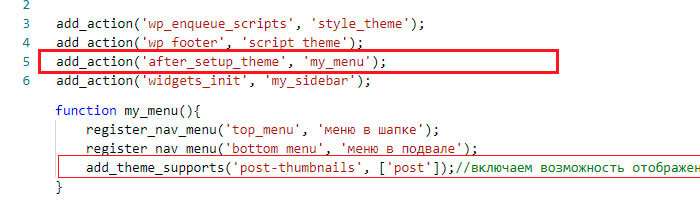
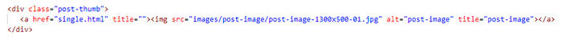

Файл articles/wp-output-post-page.html
Как я понял по иерархии файлов в ВП есть как минимум 2 вида записей: 1й - это создание страницы(запись page), 2й - это создание постов(запись post). Вот создание второго вида записей сейчас разберём.
В ВП есть раздел в консоли слева - Записи, а в этом разделе есть 2 подраздела - рубрики и метки. Рубрики это категории, можно расположить например в боковой панели, если создать какую-нибудь рубрику с названием Спорт и ярлыком sport, то при выведении на экран она будет в виде ссылки с таким URL - http://wordpress.local-sparrow/www/category/sport. Метки это теги, также можно расположить в боковой панели, файлы отвечающие за это с низкого уровня начинаются на tags, т.е. при создании метки спорт мы также увидим ссылку URL - http://wordpress.local-sparrow/www/tags/sport. Выглядят на сайте примерно так:
При выводе на сайт рубрик и меток мы не увидим этих ссылок, пока не создадим в них хотя бы по одной записи. Для этого надо зайти в подраздел, например рубрики, и создать новую рубрику или выбрать уже существующую и добавить ей запись, в конце строки рубрики есть колонка - запись, там будет цифра 0, жмём на неё и заходим в редактор создания записи. Ну или просто заходим в раздел Записи и вверху жмём Добавить новую, при создании записи в редакторе нужно будет указать тогда к чему относится эта запись, если к рубрикам, то указать к какой именно рубрике, про метки тоже самое.
Итак у нас есть, например, рубрика Спорт и у неё есть 3 записи, как вывести эти записи на экран, когда пользователь нажмёт на эту ссылку. Для этого нужно использовать цикл - так называемый "the loop". Цикл WordPress (The Loop) — это перебор записей (постов) и вывод какой-либо информации о каждом посте. Цикл получает массив записей (объектов), перебирает этот массив и во время перебора выводит информацию о каждом посте. При этом в цикле используются специально созданные для него функции (теги шаблона): the_title(), the_permalink(), the_date() и т.д.
Далее лучше почитать в wp-kama - тут. Там же и полный пример выводы постов через цикл.
Значит вывели мы посты и если у постов была картинка, то она не вывелась. Чтобы показать картинку для этого в файле functions.php подключим дополнительные возможности темы через функцию add_theme_support(). Почитать про неё можно тут. Эта функция вызывается когда наступает событие after_setup_theme, такое событие мы уже описывали в functions.php для меню, значит дописываем в нашу функцию, где регистрировали меню, поддержку нашей темы - add_theme_support(), первым параметром передаём 'post-thumbnails'(включает возможность отображать миниатюры для постов), вторым можем передать массив для каких записей отображать картинки, пусть будет только для постов - ['post'].
Как оказалось не обязатаельно можно указывать событие after_setup_theme, можно просто в functions.php написать функцию add_theme_support() с нужным аргументом и этого достаточно. Более подробно можно прочитать на каме.
После этого заходим в админку в редактировании записи у рубрики и внизу справа появится дополнительное поле Установить изображение записи, там и выбираем картинку для каждой записи, сохраняем.
Потом идём в вёрсткуи и находим блок отвечающий за вывод картинки, в нашем случае это блок:
Удаляем из него тег img и вставляем код:
Обновляем страницу на сайте и у того поста, которому задали картинку она появится и на сайте. Если вдруг картинку добавляли другой ширины и высоты, а она отобразилась маленькой и квадратной, то идё в раздел Настройки - Медиафайлы и там указываем размер миниатюры. Но у каждого поста могут быть разные размеры миниатюр, тогда подойдёт второй вариант зарегистрировать размер для миниатюры - функция add_image_size(), почитать можно тут. Вставляем этот код в тут же функцию где и add_theme_support():
И затем в вёрстке там где мы вместо картинки вставляли код с the_post_thumbnail('thumbnail') в параметрах теперь пишем тот id , который задали в functions.php - the_post_thumbnail('thumb_post')
Теперь о выводимом содержимом статьи, если в записях написать большой текст, то при выводе поста функцией the_content() весь этот текст тоже выведется. Его нужно как то обрезать, для этого есть функция the_excerpt(). Эту функцию можно настроить, настройки заключаются в том, сколько символов оставить в видимости, что поставить на конце обрезанного поста - [...] или ... или ссылку "Читать дальше...". Посмотреть можно тут.
В вёрстке вроде бы есть уже пагинация, но она ни куда не ведёт. Удалим её из вёрстки и напишем функцию ВП для вывода собственной пагинации, которая уже будет привязана к постам рубрики или меток. Функция называется - the_posts_pagination(). Почитать про неё можно тут. Эту функцию нужно разместить в цикле ВП сразу после конца цикла while и перед закрывающейся скобкой условия if:
<?php if ( have_posts() ) : ?>
<?php while ( have_posts() ) : the_post(); ?>
< article class="post">
< div class="entry-header cf">
< h1> < a href="<?php the_permalink() ?>" title=""><?php the_title(); ?>< /a>< /h1>
< p class="post-meta">
< time class="date" datetime="2014-01-14T11:24"><?php the_time('F jS, Y') ?>< /time>
/
< span class="categories">
<?php the_tags(null, '/'); ?>
< /span>
< /p>
< /div>
< div class="post-thumb">
< a href="" title=""><?php the_post_thumbnail('thumb_post') ?>< /a>
< /div>
< div class="post-content">
< p><?php the_excerpt(); ?>< /p>
< /div>
< /article>
<?php endwhile; ?>
<?php the_posts_pagination(); ?>
<?php else: ?>
< p>Нет постов в цикле.< /p>
<?php endif; ?>
Можно и не увидеть пагинацию из за того что постов мало и все они вмещаются на одну страницу. За вместимость постов на странице отвечает раздел Настройка->Чтение и там будет пункт - "На страницах блога отображать не более", где по умолчанию стоит 10 постов. Чтобы просто проверить установилась ли пагинация, можно сократить число до 2 при наличии 3х постов, тогда должна появится пагинация.
Также можно заметить, что по умолчанию вывелся и заголовок h2 с надписью Навигация по записям, чтобы его удалить надо применить фильтр, про фильтр также можно почитать на wp-kama в этой же функции - the_posts_pagination(), ссылка выше.
Вторым способом является вывод постов с помощью функции get_posts(), посмотреть можно тут. Эта функция получает записи (посты, страницы, вложения) из базы данных по указанным критериям. Можно выбрать любые посты и отсортировать их как угодно. При запросе эта функция возвращает:
Итак давайте попробуем что-нибудь вывести. Зайдём на главную страницу нашей темы sparrow и внизу есть пример вывода 3х постов. Удаляем их и на их месте пишем код с этой функцией, посмотреть код можно на wp-kama:
<?php
$posts = get_posts( array(
'numberposts' => 3,//количество выводимых постов
'post_type' => 'post',//тип выводимых постов
'suppress_filters' => true, // подавление работы фильтров изменения SQL запроса
) );
foreach( $posts as $post ){
setup_postdata($post);?>
< div class="block">
<?php the_title(); ?>
< /div>
<?php }
?>
В этом коде для проверки просто выводим в div с классом block заголоки постов, посты будут взяты последние 3 созданные за последнее время. Обновляем главную страницу и видим 3 заголовка наших постов. Вроде бы работает, удалим наш div и поместим в цикл foreach статическую вёрстку статей и подставим нужный php код в места заголовков , дат, ссылок, содержимого, в общем всё как и с первым вариантом цикла вывода постов. Если что код этого цикла можно посмотреть в файле index.php темы sparrow примерно на строке 183.
Так чем же отличается этот второй способ? Если мы хотим вывести посты в том месте где захотим, то пользуемся вторым способом. А если нужно вывести посты из категорий, меток, где конкретно тыкаем на какую то категорию, то используем первый способ.
Функция get_posts() настраивается очень гибко, если нам нужно вывести посты например из определённой категории где нидудь на странице, то в параметре $args есть свойство category, куда передаём id категории, также есть свойство category_name, куда передаём имя категории. Это всё можно посмотреть на вп-каме.
Если написать такой код - <?php the_excerpt() ?>, то выводит обрезанный пост обёрнутый в тег Р. А если написать такой код - <?php echo get_the_excerpt() ?>, то выводит без тега Р.
Выше мы разобрались как вывести список постов какой то рубрики или метки. Что если кликнули по одному из постов, чтобы увидеть его полное содержимое. Для этого в иерархии есть файлы с названиями single-*.php или single.php, в вп каме можно посмотреть. Итак создадим новый файл single.php, который будет отвечать за вывод полного содержимого статьи. В этот файл можно скопировать всё из файла page.php, написать вверху в заголовке что это "Страница поста" и ниже удалить вёрстку всех примеров-постов оставив вёрстку только одного поста. В этой вёрстке также как и в цикле заменить заголовок поста, дату, картинку, содержимое кодом php. Просто всnавляем thе_title(), the_post_tumbnail(), the_content() в нужные места. Если что код можно посмотреть в файле single.php темы sparrow на строке 28. Также пагинацию с этой страницы можно убрать, она не нужна, ведь у нас страница для вывода одного поста.
Допустим мы создали запись страницу Главная и привязали к неё шаблон. В этой записи напишем какой нибудь текст и теперь хотим выводить этот текст когда мы попадаем на главную страницу. Для этого в шаблоне в том месте где хотим видеть этот текст пишем код:
<?php the_content(); ?>
Название страницы также выводится функцией:
<?php the_title(); ?>
Есть например страница и у неё есть дочерние страницы, чтобы вывести содержимое этих страниц есть функция get_pages() с параметром $args:
< div class="directions">
< h2>Направление деятельности< /h2>
< div class="directions-blocks">
<?php $pages = get_pages( [
'hierarchical' => 1,
'child_of' => 76,//эта настройка указывет id страницы родителя
'parent' => -1,
'post_type' => 'page',
'post_status' => 'publish',
] );
foreach( $pages as $post ): setup_postdata( $post );?>
< div class="directions-block">
< h4><?php the_title(); ?>< /h4>
<?php the_post_thumbnail(); ?>
<? endforeach; ?>
<?php wp_reset_postdata();?>
< /div>
< /pre>